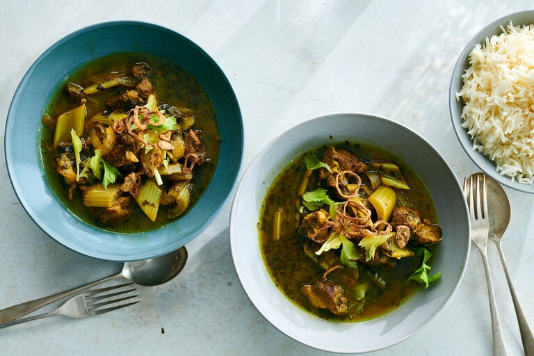

Persian Lamb Khoresh

Description
Most types of Iranian stew, known as khoresh or sometimes spelled khoresht, take hours to prepare and yet more hours to cook. Not this one. Karafs means celery, so here a whole head of crunchy, pale green stalks and two bunches of herbs simmer alongside lamb (or beef) for just under an hour. The sweet flavor of caramelized onions provides the base note to a funky green broth tarted up with lime and lemon. Seasoned with turmeric and saffron, the stew takes on a golden hue. A shallot, sliced and fried until crisp, makes a fine garnish, but is optional. Not optional: a side of buttery steamed rice.
Ingredients
For 6 persons:
- 1 large bunch curly parsley
- 1 small bunch fresh mint
- 1/2 cup olive oil
- 1 pound lamb shoulder (or beef chuck), cut into 1-inch cubes
- 1 teaspoon ground turmeric
- Kosher salt and black pepper
- 1 large yellow onion, halved and thinly sliced
- 2 garlic cloves, minced
- 2 tablespoons unsalted butter
- 1 large head celery (1 to 1½ pounds), trimmed, pale green leaves reserved, stalks cut on an angle into 1-inch pieces
- ¼ cup lemon juice (from about 2 lemons)
- ¼ cup lime juice (from about 3 limes)
- ½ teaspoon saffron threads, crushed
- Buttered steamed white rice, preferably basmati, for serving
Steps:
- Trim or break off thicker parts of the parsley stems and pull mint sprigs and larger leaves from their stems. Discard stems or reserve for another use. Pluck a small handful of leaves and tender sprigs from parsley and mint and set aside for garnish. Chop remaining herbs.
- In a large Dutch oven or pot, heat ¼ cup oil over medium-high. Season lamb with turmeric, 1½ teaspoons salt and ½ teaspoon pepper. Add lamb, onion and garlic, and cook, stirring occasionally, until onions start to caramelize and lamb is evenly browned, about 10 minutes. Add 2 cups water, cover and simmer over medium-low heat for 20 minutes.
- While the lamb simmers, cook the celery: In a skillet, heat the remaining ¼ cup oil with the butter over medium-high. Once butter foams, add celery, season with salt and pepper and cook, stirring frequently, for 3 minutes. Add chopped parsley and mint, and cook, stirring occasionally, until celery just starts to caramelize, about 8 minutes.
- Add celery and herbs to the Dutch oven, along with lemon juice, lime juice and saffron. Cover, leaving lid slightly ajar, and simmer on low heat until lamb is tender, about 30 minutes.
- While stew cooks, make the fried shallots, if desired: Line a small plate with a paper towel. In a small bowl, sprinkle flour over sliced shallots and toss with a fork. Heat canola oil in a small saucepan or skillet over medium-high until it shimmers slightly, about 1 minute. Fry shallots in oil, flipping once or twice so they cook evenly, until golden brown and crisp, 1 to 2 minutes. Remove from oil with a fork, season with a pinch of salt and let drain on paper towel-lined plate until stew is ready.
- Taste stew. Broth should be tart, but balanced. Celery and lamb should be tender but hold their shape. Season to taste with additional salt and pepper. Garnish with reserved herbs and fried shallots. Serve with chelo (Persian-style steamed rice) or buttered, steamed white rice. Stew can be made up to 2 days in advance.